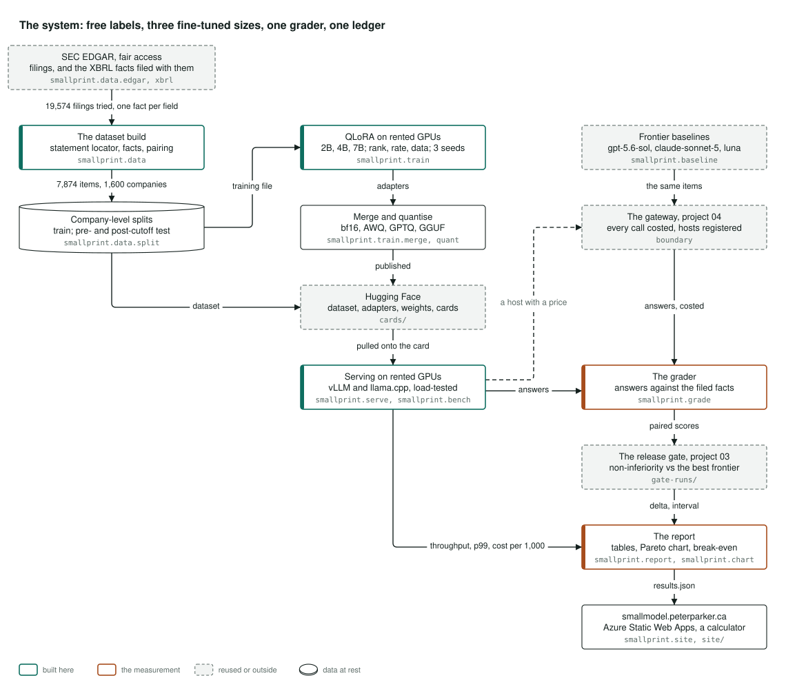
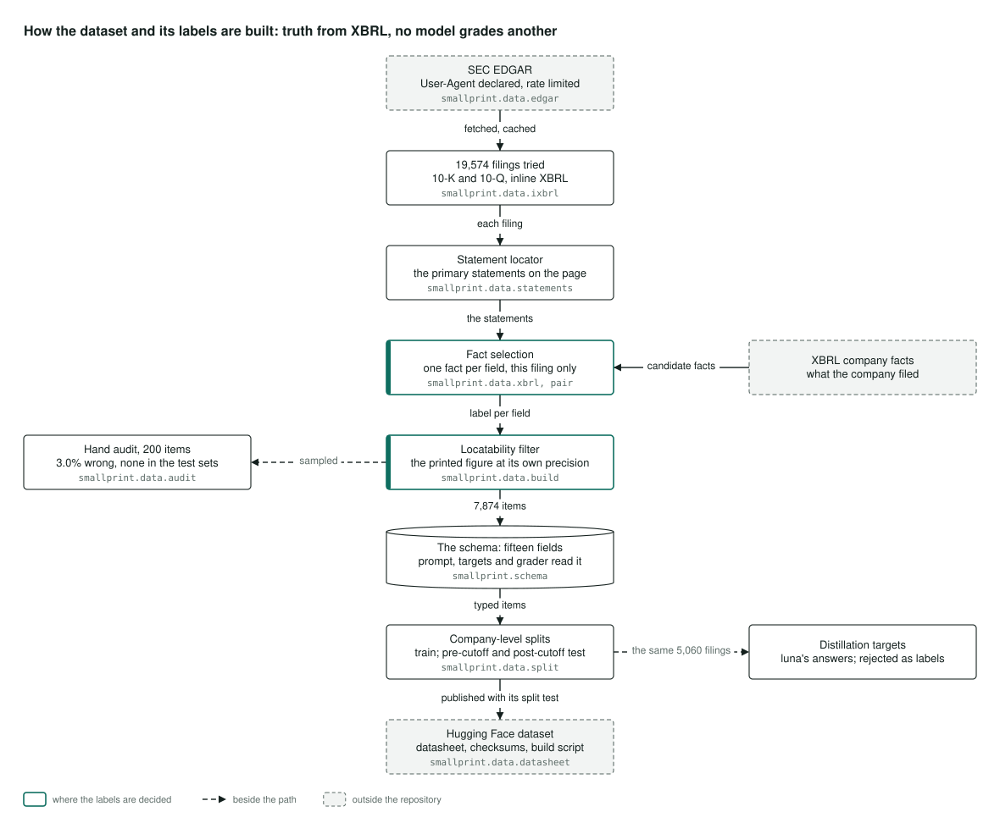
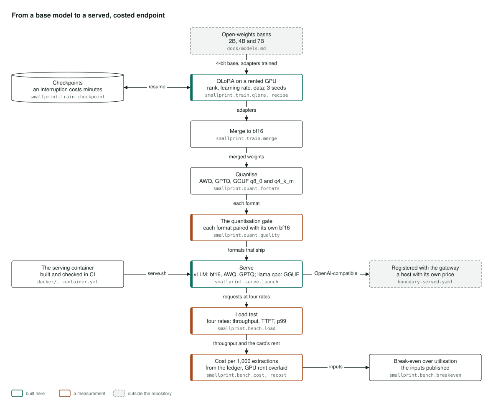
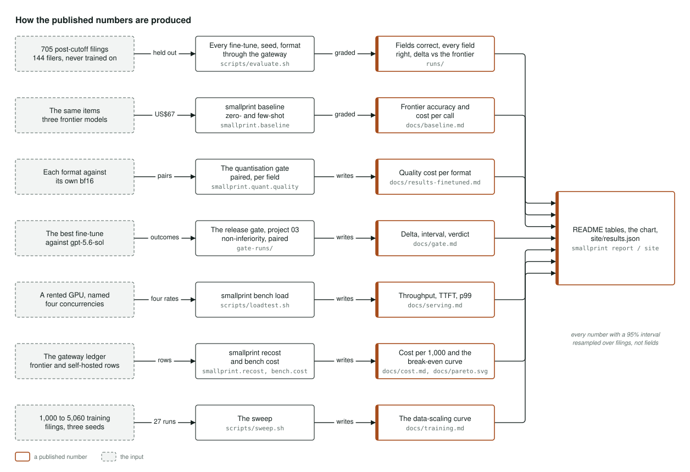

Architecture
How it's built
How the fine-tuned extraction models behind this page are built, served and measured, in four pictures. Select a diagram to open it full size.
The system

The diagram reads left to right: the data, the models, and the measurement.
The data comes from the SEC. Companies file their quarterly and annual reports there and tag the key figures in a machine-readable format called XBRL, so every field already has an answer the company itself filed. Filings are fetched within the SEC's fair-access rules, the financial statements are found on each page, and one filed figure is paired with each field. The items are split by company, with test sets from before and after the models' training cutoff that no model ever trains on.
The models are three open-weights bases, at 2, 4 and 7 billion parameters. Each is fine-tuned on rented GPUs, with the settings and the amount of data varied over three seeds. The results are merged, compressed into several smaller formats, published on Hugging Face with the dataset and model cards, and served from there on a rented card where the load test runs.
The measurement puts the same held-out filings to three frontier models through the portfolio's gateway. The gateway also registers each self-hosted endpoint with its own price, so every call is costed in one ledger. One grader scores every answer against the filed figures and names each miss. The release gate from project 03 decides whether the small model is no worse than the frontier one, and the report writes the tables, the quality-against-cost chart, the break-even and this site's results file.
Where it lives: smallprint.data, smallprint.train, smallprint.quant, smallprint.serve, smallprint.bench, smallprint.baseline, smallprint.grade, gate-runs/ and smallprint.report.
How the dataset and its labels are built

The labels cost nothing because the companies filed them. The download client names itself and keeps to the SEC's rate limit. Each report's tagged figures are read, the main financial statements are found on the page, and for each field one filed figure is chosen, from the filing being labelled and no other.
An item is kept only when the printed figure appears on the page at its own precision. That rule came from a hand audit of 200 items, after the first version of the dataset turned out to have labels on the wrong line.
A single fifteen-field schema is read by the prompt, the training targets and the grader alike, and refuses to load if they drift apart. Items are split by company into a training set and two test sets, from before and after the training cutoff. The dataset is published on Hugging Face with its datasheet, checksums and build script. As a side experiment, the same 5,060 training filings were also labelled with a frontier model's answers, to test distillation, which was rejected.
Where it lives: smallprint.data.edgar, smallprint.data.ixbrl, smallprint.data.statements, smallprint.data.xbrl, smallprint.data.build, smallprint.data.audit, smallprint.schema and smallprint.data.split.
From a base model to a served, costed endpoint

Each base model is loaded in compressed form and trained with QLoRA on a rented GPU. It saves checkpoints as it goes, so if the cloud provider reclaims the cheap machine, only minutes are lost.
The trained adapters are merged back into the full model and compressed into four smaller formats. Each format is checked against the uncompressed model on the same items, and only the formats that hold up ship.
A container serves the model with vLLM, or with llama.cpp for the smallest format. The endpoint is registered with the gateway at its own price, and a load test drives it at four levels of concurrency for throughput, time to first word and slowest-case response time. The cost per thousand extractions comes from the gateway's ledger with the GPU rent added. The break-even against the frontier APIs is a curve over how busy the card is, with its inputs published, and this site's calculator reproduces it in the browser, checked against the Python in CI.
Where it lives: smallprint.train.qlora, smallprint.train.checkpoint, smallprint.train.merge, smallprint.quant, docker/, smallprint.serve.launch, smallprint.bench.load and smallprint.bench.breakeven.
How the published numbers are produced

Every number comes from a stated input, through one command, into a stored run. This is how each one is made.
Every fine-tuned model, seed and format answers the same 705 filings, from 144 companies, published after the training cutoff, and is graded. The three frontier models answer the same filings. Each compressed format is compared with its own uncompressed version. The best fine-tuned model is compared with a frontier model, gpt-5.6-sol, by the release gate's paired test. The load test runs on a named rented GPU at four levels of concurrency. Costs come from the gateway's ledger, and the curve of quality against training data comes from 27 runs at growing training sizes.
One command writes the README's tables and chart from those runs, and another writes this site's results file from the same ones. Every number carries a 95% interval, resampled over filings rather than individual fields.
Where it lives: scripts/evaluate.sh, smallprint.baseline, smallprint.quant.quality, gate-runs/, scripts/loadtest.sh, smallprint.recost, scripts/sweep.sh, smallprint.report and smallprint.site.